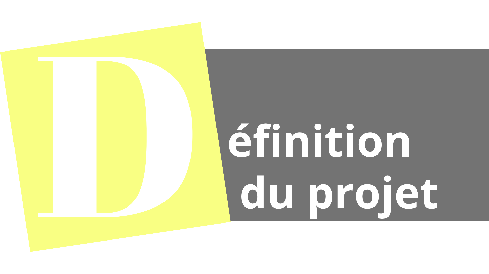
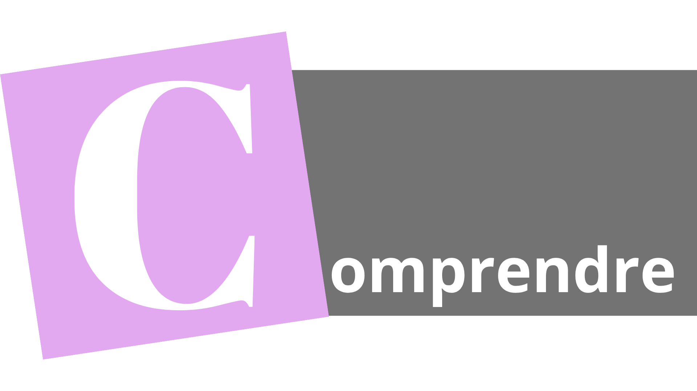
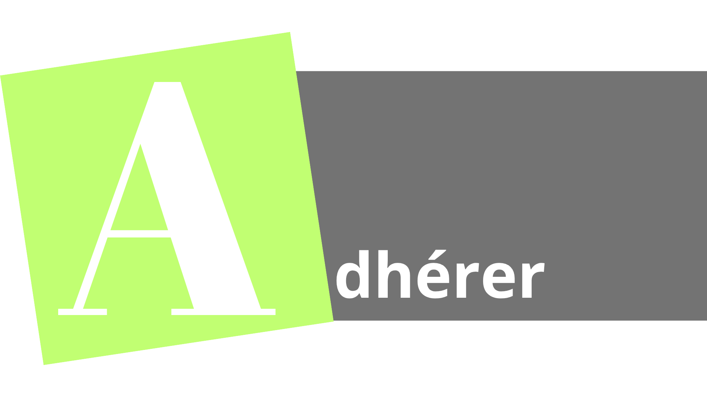
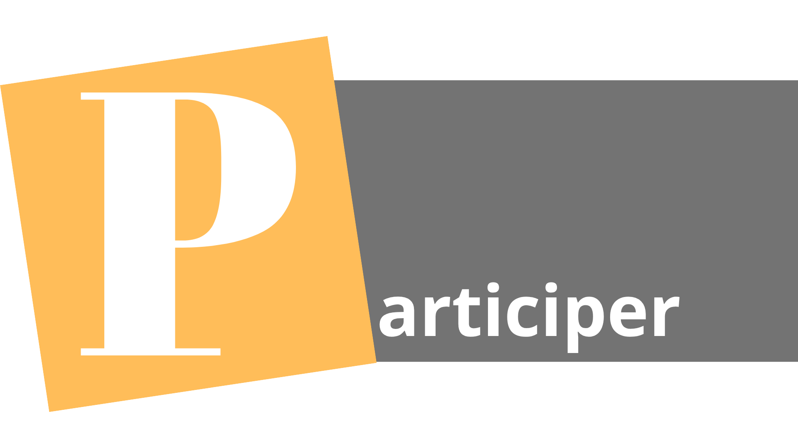
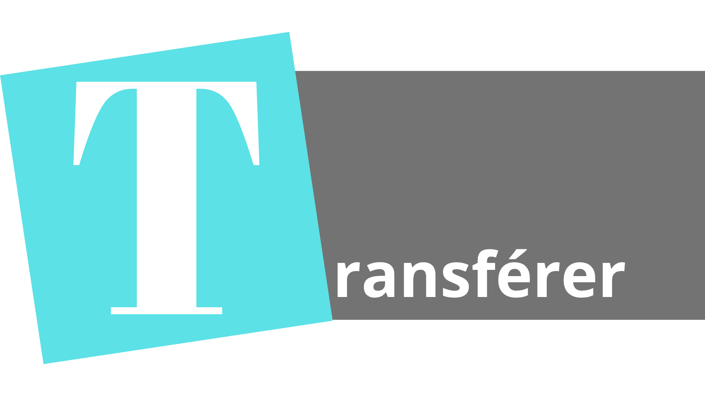
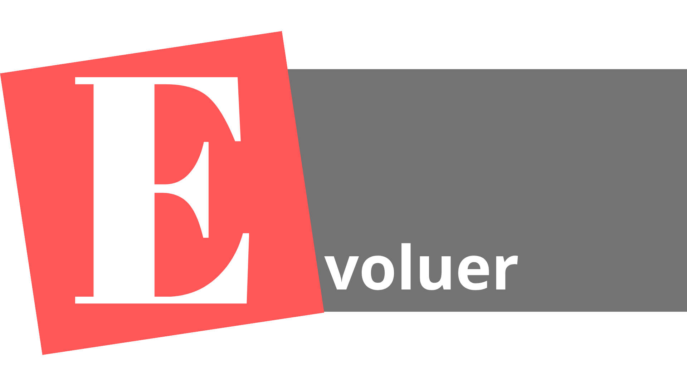

Etape préalable (0)
Définition du Projet (Comprendre 1)
Définir / penser le projet théoriquement, soit comprendre les enjeux mais pour l'équipe responsable de la mise en place du projet.

Définir / penser le projet théoriquement, soit comprendre les enjeux mais pour l'équipe responsable de la mise en place du projet.

Tout ce qui est nécessaire pour que les concernés par le projet (les stakeholders) puissent comprendre le projet. C'est donc principalement le quoi, le pourquoi, qui sont les employés / services impactés, qui participe à la mise en place de ce projet, les attentes des managers et autres collaborateurs, les besoins de ceux-ci, les ressources nécessaires.

Le but de cette étape est donc de convaincre les personnes touchées par le projet afin qu'ils adhérent à la mise en place de celui-ci. La compréhension des besoins est primordiale et la psychologie peut aider lors de cette étape.

Cette étape consiste à trouver des personnes provenant du métier / terrain intéressées et qui s’impliquent dans ce changement, ceux-ci vont devenir ambassadeurs du changement et aider à convertir / motiver d’autres personnes les entourant. Elle consiste également à trouver des manières adaptées pour faire participer les parties prenantes dans le projet de manière à améliorer le projet grâce à leur expertise et connaissance métier, on peut tirer un bénéfice de la pluralité des points de vue également.

Lors de cette étape on commence à s'intéresser à l'après, à comment faire perdurer le projet de changement dans le temps. C'est donc documenter les changements pour que de nouveaux arrivants puissent s'intégrer dans ce nouvel environnement et c'est également la formation. Pour cela il faut toutefois avoir au préalable retirer les barrières par la sensibilisation des individus.

Tous les processus qui permettent l'amélioration dans le temps de ce projet à l'avenir. La mise en place d'un réseau de communication des problèmes subsistants par feedbacks et autres manières de promouvoir l'amélioration. Ensuite, l'évaluation de la réussite du projet via des indicateurs, le remerciement et la fête des efforts réalisés et la reconnaissance des résultats du projet font également partie des tâches inclues dans cette partie.
1 sur 6